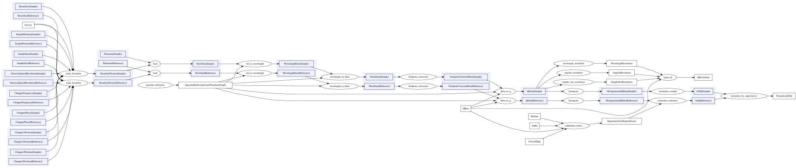
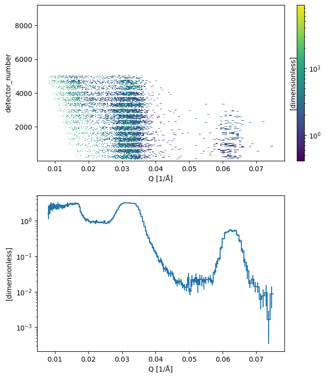
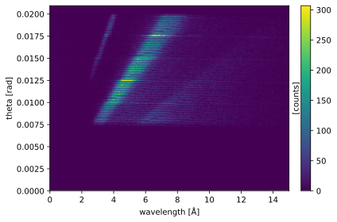

Divergent data reduction for Amor#
In this notebook, we will look at how to use the essreflectometry package with Sciline, for reflectometry data collected from the PSI instrument Amor in divergent beam mode.
We will begin by importing the modules that are necessary for this notebook.
[1]:
import scipp as sc
import sciline
from essreflectometry.amor import providers, default_parameters
from essreflectometry.types import *
[2]:
params = {
**default_parameters,
QBins: sc.geomspace(dim='Q', start=0.008, stop=0.075, num=200, unit='1/angstrom'),
SampleRotation[Sample]: sc.scalar(0.7989, unit='deg'),
Filename[Sample]: "sample.nxs",
SampleRotation[Reference]: sc.scalar(0.8389, unit='deg'),
Filename[Reference]: "reference.nxs",
WavelengthEdges: sc.array(dims=['wavelength'], values=[2.4, 16.0], unit='angstrom'),
}
[3]:
pipeline = sciline.Pipeline(
providers,
params=params
)
[4]:
pipeline.visualize((NormalizedIofQ, QResolution), graph_attr={'rankdir': 'LR'})
[4]:

[5]:
# Compute I over Q and the standard deviation of Q
ioq, qstd = pipeline.compute((NormalizedIofQ, QResolution)).values()
Downloading file 'sample.nxs' from 'https://public.esss.dk/groups/scipp/ess/amor/1/sample.nxs' to '/home/runner/.cache/ess/amor/1'.
Downloading file 'reference.nxs' from 'https://public.esss.dk/groups/scipp/ess/amor/1/reference.nxs' to '/home/runner/.cache/ess/amor/1'.
[6]:
import matplotlib.pyplot as plt
fig = plt.figure(figsize=(5, 7))
ax1 = fig.add_axes([0, 0.55, 1.0, 0.45])
ax2 = fig.add_axes([0, 0.0, 1.0, 0.45])
cax = fig.add_axes([1.05, 0.55, 0.03, 0.45])
fig1 = ioq.plot(norm='log', ax=ax1, cax=cax, grid=True)
fig2 = ioq.mean('detector_number').plot(norm='log', ax=ax2, grid=True)
fig1.canvas.xrange = fig2.canvas.xrange

Make a \((\lambda, \theta)\) map#
A good sanity check is to create a two-dimensional map of the counts in \(\lambda\) and \(\theta\) bins. To achieve this, we request the ThetaData from the pipeline. In the graph above we can see that WavelengthData is required to compute ThetaData, therefore it is also present in ThetaData so we don’t need to require it separately.
[7]:
from essreflectometry.types import ThetaData
pipeline.compute(ThetaData[Sample])\
.bins.concat('detector_number')\
.hist(
theta=sc.linspace(dim='theta', start=0.0, stop=1.2, num=165, unit='deg').to(unit='rad'),
wavelength=sc.linspace(dim='wavelength', start=0, stop=15.0, num=165, unit='angstrom'),
)\
.plot()
[7]:

This plot can be used to check if the value of the sample rotation angle \(\omega\) is correct. The bright triangles should be pointing back to the origin \(\lambda = \theta = 0\).
Save data#
We can save the computed \(I(Q)\) to an ORSO .ort file using the orsopy package.
First, we need to collect the metadata for that file. To this end, we build a pipeline with additional providers. We also insert a parameter to indicate the creator of the processed data.
[8]:
from essreflectometry import orso
from essreflectometry.amor import orso as amor_orso
from orsopy import fileio
[9]:
providers_with_metadata = (
*providers,
*orso.providers,
*amor_orso.providers,
)
params[orso.OrsoCreator] = orso.OrsoCreator(fileio.base.Person(
name='Max Mustermann',
affiliation='European Spallation Source ERIC',
contact='max.mustermann@ess.eu',
))
metadata_pipeline = sciline.Pipeline(
providers_with_metadata,
params=params
)
Then, we recompute \(I(Q)\) and and combine it with the ORSO metadata:
[10]:
iofq_dataset = metadata_pipeline.compute(orso.OrsoIofQDataset)
Unfortunately, some metadata could not be determined automatically. In particular, we need to specify the sample manually:
[11]:
iofq_dataset.info.data_source.sample
[11]:
Sample(name=None)
[12]:
iofq_dataset.info.data_source.sample = fileio.data_source.Sample(
name='Ni / Ti Multilayer',
model=fileio.data_source.SampleModel(
stack='air | (Ni | Ti) * 5 | Si',
),
)
And we also add the URL of this notebook to make it easier to reproduce the data:
[13]:
iofq_dataset.info.reduction.script = 'https://scipp.github.io/essreflectometry/examples/amor.html'
To support tracking provenance, we also list the corrections that were done by the workflow and store them in the dataset:
[14]:
iofq_dataset.info.reduction.corrections = orso.find_corrections(metadata_pipeline.get(orso.OrsoIofQDataset))
Finally, we can save the data to a file. Note that iofq_dataset is an orsopy.fileio.orso.OrsoDataset.
[15]:
iofq_dataset.save('amor_reduced_iofq.ort')
Look at the first 50 lines of the file to inspect the metadata:
[16]:
!head amor_reduced_iofq.ort -n50
# # ORSO reflectivity data file | 1.0 standard | YAML encoding | https://www.reflectometry.org/
# data_source:
# owner:
# name: J. Stahn
# affiliation: null
# contact: jochen.stahn@psi.ch
# experiment:
# title: commissioning
# instrument: AMOR
# start_date: 2020-11-25T16:03:10
# probe: neutron
# facility: SINQ
# sample:
# name: Ni / Ti Multilayer
# model:
# stack: air | (Ni | Ti) * 5 | Si
# measurement:
# instrument_settings:
# incident_angle: {min: -0.0030468022385090558, max: 0.020180017337125482, unit: '-0.0030468022385090558'}
# wavelength: {min: 2.4, max: 16.0, unit: '2.4'}
# data_files:
# - file: sample.nxs
# additional_files:
# - file: reference.nxs
# comment: supermirror
# reduction:
# software: {name: ess.reflectometry, version: 24.3.0, platform: Linux}
# timestamp: 2024-03-04T14:56:48.418294+00:00
# creator:
# name: Max Mustermann
# affiliation: European Spallation Source ERIC
# contact: max.mustermann@ess.eu
# corrections:
# - supermirror calibration
# - chopper ToF correction
# - footprint correction
# - total counts
# script: https://scipp.github.io/essreflectometry/examples/amor.html
# data_set: 0
# columns:
# - {name: Qz, unit: 1/angstrom, physical_quantity: wavevector transfer}
# - {name: R, physical_quantity: reflectivity}
# - {name: sR, physical_quantity: standard deviation of reflectivity}
# - {name: sQz, unit: 1/angstrom, physical_quantity: standard deviation of wavevector
# transfer resolution}
# # Qz (1/angstrom) R sR sQz (1/angstrom)
8.0452397776957750e-03 1.5445597636149850e+00 4.3385056948216272e-01 3.3982950193305235e-04
8.1362309924588108e-03 2.1585045625720860e+00 4.8653310142278261e-01 3.4668776395080977e-04
8.2282513128038824e-03 2.0424722555104911e+00 4.8411689266388663e-01 3.5382770419944086e-04
8.3213123778579298e-03 2.2389709698107971e+00 4.6687424159438062e-01 3.5766157572506523e-04